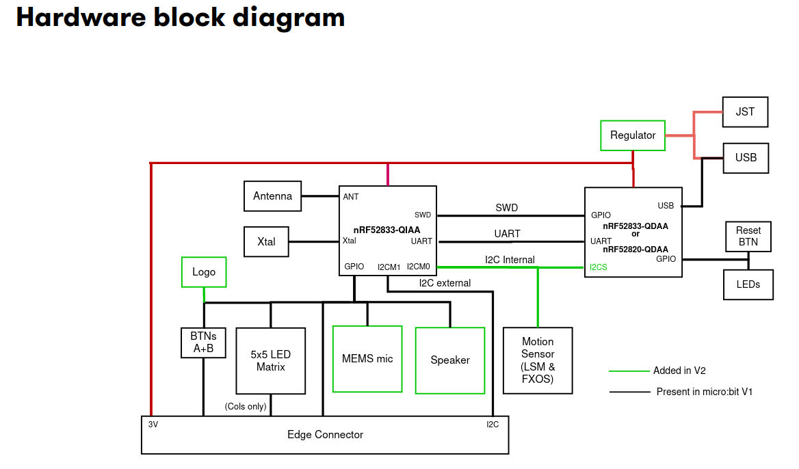
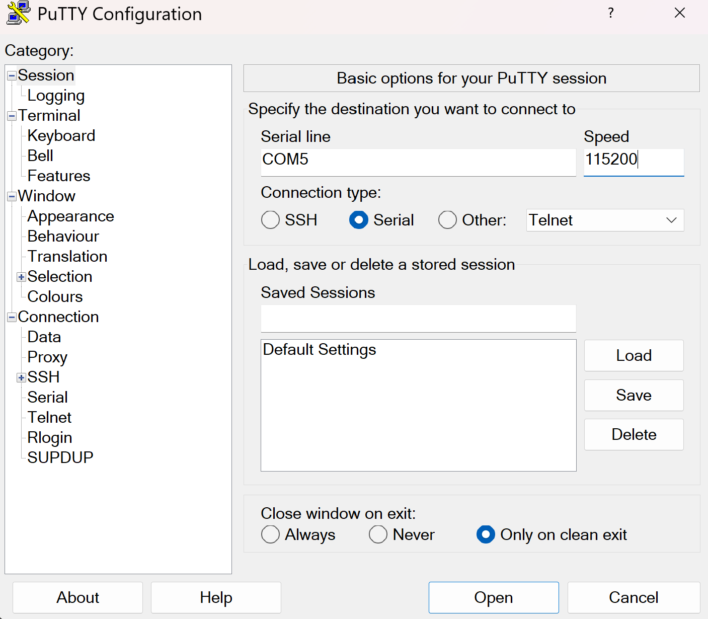

UART echo application
The end goal of this task is to communicate with the serial port of the micro:bit. A very common interface to allow communication with a microcontroller is the UART protocol.
This is a protocol which facilitates communication through two physical pins, a transmit pin called TX and a receive pin RX. You cross-wire the TX pin of one side to the RX pin of the other side and vice-versa. Both sides have to agree on the communication speed which is commonly called baudrate.
The specific task is an echo application: Everything that is received on the RX pin of the microcontroller UART should be sent back to the sender via the TX pin.
The micro:bit UART interface
The micro:bit v2 has a very convenient feature which allows use to talk with one of its UART interfaces via the USB interface you already have. Have a look at this hardware block diagram taken from the website:

The nRF52833-QIAA block on the left side is the target MCU we are always programming. The
other microcontroller on the right side is the interface microcontroller. When we talk to the UART
of the target MCU, or we use probe-rs to flash new software to the target or read/write to its
RAM, we always do this through the interface MCU. The interface MCU exposes the serial port
via its USB interface as a so called USB-CDC device, where CDC is an abbreviation for
Communication Device Class.
Install the cyme tool using the following command:
cargo install cyme
Then run the command cyme with the micro:bit connected via USB. You should see a line like
this:
3 6 0x0d28 0x0204 BBC micro:bit CMSIS-DAP 9906360200052820ea998ce1eddd4919000000006e052820 - 12.0 Mb/s
Next, you can figure out the actual device name that you have to use to talk with the MCU by running the following command on Linux:
❯ ls -l /dev/serial/by-id/*
(...)
lrwxrwxrwx - root 12 Jun 09:39 /dev/serial/by-id/usb-Arm_BBC_micro:bit_CMSIS-DAP_9906360200052820ea998ce1eddd4919000000006e052820-if01 -> ../../ttyACM0
On Windows, you can instead use this command in the PowerShell terminal:
Get-WmiObject Win32_SerialPort | Select-Object Name,Description
Connecting to the UART interface - Linux
These instructions are Linux specific. Check the next segment for Windows specific instructions.
There are various programs available to connect to a serial port. For example, you can install
picocom and then run the following command:
picocom -b 115200 /dev/ttyACM0
Your device name might be different! It is named /dev/ttyACM0 because that was the output of
ls -l /dev/serial/by-id/*. Change this for you command if necessary.
Connecting to the UART interface - Windows
There are various programs available to connect to a serial port. On Windows, you can install PuTTY and then connect to the serial port using the COM port name you found before.
You need to use the Serial connection type and specify a speed of 115200. This could look something liket his:

You can then open the connection to open a session connected to the serial port of the MCU.
UART hardware
Before we start writing code, lets look at the hardware first. We mentioned that UART uses 2 physical pins. This means that two of the GPIO pins of the micro:bit need to be configured so they can be used by the UART hardware block for communication.
For a peripheral like UART, it is very common that a microcontroller support a larger selection of pins to be assigned to the UART. Similarly to the blinky exercise where LED control is mapped to certain GPIO pins, there is a pin mapping which depends on the board design.
You can either look at the pin map or the schematic to find the GPIO pin assignment. Try to figure the pin mapping out on your own.
The RX pin is mapped to P0.06 while the TX pin is mapped to P1.08.
The micro:bit also has multiple UART instances. It allows using both of them, and we are going to use instance 0.
Some background information: Interrupts and direct memory access (DMA)
In the next segment, we will mention interrupts. The HAL we are using abstracts a lot of things away from us, but it does not hurt to have a basic understanding of what is happening behind the scenes.
In computing systems, processing important events in a timely manner is oftentimes done using interrupts. A really simple analogy: When the door bell rings or someone calls you , you will generally drop whatever you are doing right now to open the door or answer the phone call.
Mapping this analogy on a computer system, the delivery man ringing your door bell is the UART peripheral informing you about the data delivery, while you are the processor. When the hardware peripheral fires an interrupt, the CPU will stop whatever it is doing to service the peripheral, and then go back to whatever it was doing before. Depending on how the hardware is designed, you can do a lot of work with interrupts.
Some MCUs are designed in a way which allows hardware peripherals to access memory like RAM directly. This technique is called direct memory access (DMA). Combining interrupts and DMA allows to perform something like large data transfers with minimal CPU intervention.
The UART driver provided by the HAL that we are going to use combines both of these concepts as well.
Step 1 - Create a UART driver
In the previous exercise, we created a driver for a GPIO pin. Now, we create a driver for another hardware module: The UART. The HAL we are using provides a driver for us.
Read the uarte module docs in embassy
first. There are two flavors of this driver: A buffered one and a more simple one. In this example,
and for most of the applications in our domain, we generally want to ensure that we never lose
data, ideally independent of whatever the software is doing. A detailed explanation of how
this can be done would exceed the scope of this task, but you can assume that you need the
buffered flavor to not lose data between read calls, so that is what we are going to use.
Have a look at the constructor documentation of the buffered UART. It has 11 arguments! The driver is relatively complex, and the constructor is not spared from that. It allows reliable communication and exposes an elegant API though.
Remember that the Peri type is always used for resource management types are comes from the
peripheral singleton field which is named _periphs in our example. Remove the leading underscore,
because we are going to use this type now.
Let’s go through the arguments of the constructor one by one. You do not need to understand all of the details here but they are mentioned for completeness.
uarte- This is the UART instance we want to use. For our solution we are going to use instance 0 but the hardware allows to use instance 1 as well.timer- The driver needs one of the hardware timer blocks to count the number of received bytes. You can use any unused timer instance here.ppi_ch1- This is used to connect the UART hardware to the time hardware for byte counting. Have a look at the PPI docs if you are interested in more information of this hardware feature. You can pass any unused PPI channel instance here.ppi_ch2- This is used for implementing permanent reception on the RX side in the background using DMA and interrupts. You can pass any unused PPI channel instance here.ppi_group- Required so that the PPI channel 2 can disable itself on certain events. You can pass any PPI group instance here.rxd- This is the physical GPIO pin which shold be used as the RX pin. We figured out which pin this out in a previous section.txd- This is the physical GPIO pin which shold be used as the TX pin. We figured out which pin this is in a previous section.irq- This is something embassy HAL specific. The driver relies on a interrupt handler being called for the UART. For technical reasons, that handler can not be specified in the HAL itself. Instead, the HAL provides a function that you should call on an interrupt, and we need to call this function in our own interrupt handler. However, the HAL provides a nice little macro that does this for us and creates a token structure for us. We need to provide that token structure to the HAL driver as proof that we have specified an interrupt handler.config- Configuration of the UART parameters. UART has various configurable parameters, and both communication partners have to agree on the same parameters. Usually, the most important parameter here is the baudrate.rx_buffer- Buffer used by the driver to permanently receive data in the background. The driver uses a double buffering scheme in the background to allow permanent reception of data.tx_buffer- Buffer used by the driver to transmit data.
Phew, that is a lot! We are going to provide multiple hints to simplify this task, in addition to the hints you can derive from the information above.
Your task is to create the driver and store it with the name uart.
If you are struggling with figuring out how to declare the interrupt handler and create the irq
argument, you can have a look at the hint:
Write this above your main method.
#![allow(unused)]
fn main() {
use embassy_nrf::{buffered_uarte, peripherals};
embassy_nrf::bind_interrupts!(
struct Irqs {
UARTE0 => buffered_uarte::InterruptHandler<peripherals::UARTE0>;
}
);
}If you are struggling with figuring out the UART configuration, remember that we want to use
a baudrate of 115200 and that we can use the default configuration otherwise.
#![allow(unused)]
fn main() {
use embassy_nrf::uarte;
let mut uarte_config = uarte::Config::default();
uarte_config.baudrate = uarte::Baudrate::BAUD115200;
}If you can not figure out how the buffers are specified:
#![allow(unused)]
fn main() {
let mut driver_rx_buf: [u8; 256] = [0; 256];
let mut driver_tx_buf: [u8; 256] = [0; 256];
}Of course, other sizes work as well, but multiples of 128 are common. The size MUST be even for technical reasons.
For all other arguments, you have to pass in fields of the periphs structure.
The full solution of this step:
#![allow(unused)]
fn main() {
let mut uarte_config = uarte::Config::default();
uarte_config.baudrate = Baudrate::BAUD115200;
let mut driver_rx_buf: [u8; 256] = [0; 256];
let mut driver_tx_buf: [u8; 256] = [0; 256];
let uart = buffered_uarte::BufferedUarte::new(
periphs.UARTE0,
periphs.TIMER0,
periphs.PPI_CH0,
periphs.PPI_CH1,
periphs.PPI_GROUP0,
periphs.P1_08,
periphs.P0_06,
Irqs,
uarte_config,
&mut driver_rx_buf,
&mut driver_tx_buf,
);
}Not all UART driver initialization will be that complex! This is actually a very capable, but also very complex driver. There are other UART hardware implementations out there that do not support DMA but that are also less complex. Generally, most driver constructors will at the minimum consume pin resource handles and the UART resource handle while also expecting some UART configuration.
Step 2 - Split the driver into an RX and TX handle
Many Rust UART drivers allow splitting themselves up into separate RX and TX handles. For example,
you might be interested in handling reception and transmission in separate tasks or doing them
concurrently. Many hardware implementations can also support this. This driver has
a split method.
Create distinct uart_rx and uart_tx driver handles.
#![allow(unused)]
fn main() {
let (mut uart_rx, mut uart_tx) = uart.split();
}These are already mutable because the methods we are going to use require mutable access.
Step 3 - Read into a reception buffer inside a loop
Now we want to read something from the UART. You can use the uart_rx driver to do this. It has
an async read method
you can use for this purpose.
We need a separate buffer for this again. The buffer that we already declared is used exclusively by the driver. You can create a new buffer similarly to the way you created the first one. You can use a size like 64 or 128 here. Generally, it often makes sense to determine the dimension based on the maxium expected packet size.
Your task is to asynchronously read into a buffer. Do a match call on the resulting
Result so that you can do clean error handling as well. Keep in mind that you also need to
call await on the read call because it is an async function. Create the buffer before
the loop call because there is no need to re-instantiate it for every read call.
#![allow(unused)]
fn main() {
let mut rx_buf: [u8; 64] = [0; 64];
loop {
match uart_rx.read(&mut rx_buf).await {
Ok(_bytes_received) => (),
Err(_e) => ()
}
}
}Step 4 - Write back whatever was received
Now, we want to send back everything we received. In the Ok case, we will have access
to the number of received bytes. This can also be smaller than the full buffer size!
In the Ok arm of the match statement on the read call, use the write_all method of
uart_tx. You also need to import the embedded_io_async::Write trait for this to work.
Remember that you want to send the number of bytes you actually received back, not the full buffer.
#![allow(unused)]
fn main() {
let mut rx_buf: [u8; 64] = [0; 64];
loop {
match uart_rx.read(&mut rx_buf).await {
Ok(read_bytes) => {
match uart_tx.write_all(&rx_buf[0..read_bytes]).await {
Ok(_) => ()
Err(_e) => ()
}
}
Err(_e) => ()
}
}
}Step 5 - Verifying everything works
Now, after you have flashed this application using cargo run --bin uart_echo, you send
anything to the MCU and it should be sent back. When you use an application like picocom or
PuTTY, this has the side effect that it looks like you are typing on a console.
Test that your echo application works properly by connecting to the serial port like we explained earlier and typing anything.
Finishing Up
You are able to send and receive data to the MCU from your computer via UART now! The UART echo application
is oftentimes the “Hello World” of UART applications. This one is actually quite capable.
There are some things that can be improved in our app. For example, you could add proper
error handling for the Err(e) match arms, which could at the minimum include a defmt::warn! or
defmt::error! log.
Some interesting information: When you asynchronously call read and nothing is arriving on
the RX pin, the CPU can actually do other stuff! All the reception is handled in the background
by the dedicated interrupt handler provided by our HAL. Similarly, while you are writing
data out asynchronously using write and/or write_all, all the driver needs to do it to
pass the address and the transfer size to the hardware. All the rest is done by the hardware
using DMA.
Practical applications in our domain will oftentimes use binary protocols. In principle, we could
send binary packets to this application and we would also receive those back. However, using a utility
like picocom allows for nice visualization that everything is working.
There is an UART Spacepackets exercise where we communicate with an MCU using standardized CCSDS spacepackets via the serial interface. This communication pattern is very commonly used at the IRS!